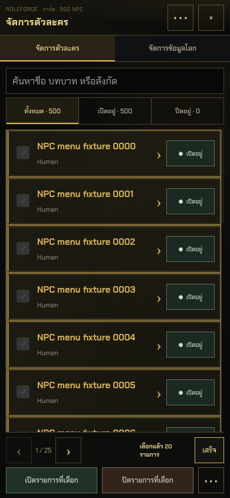
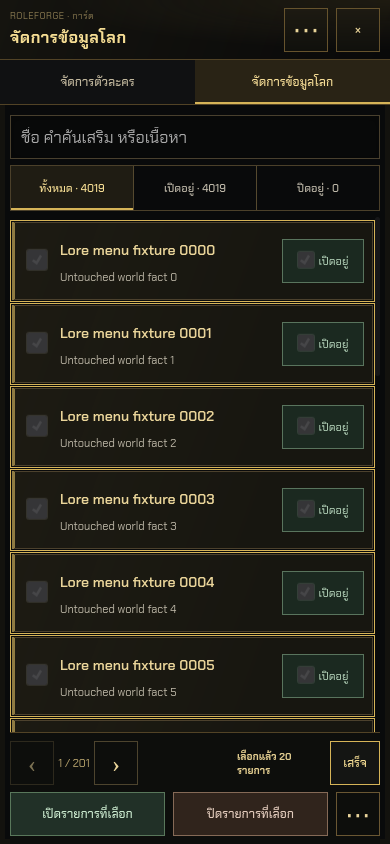
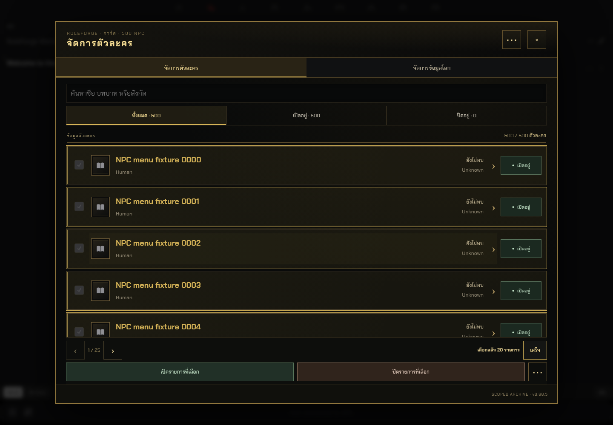
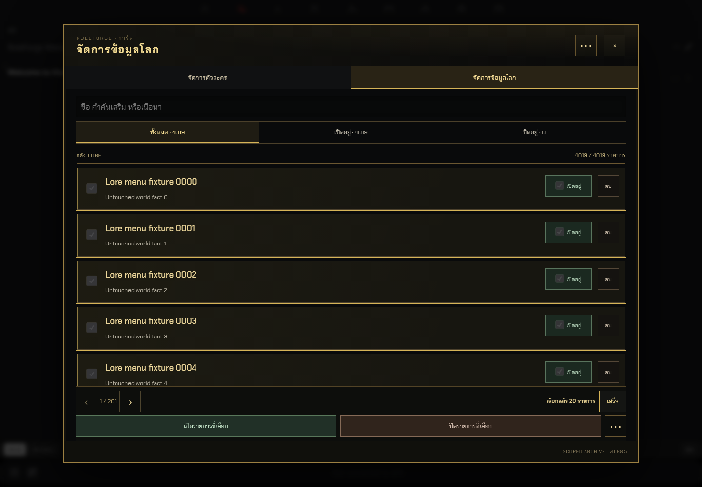

RoleForge 0.68.5 · เมนูเลือก NPC / Lore
ภาพจาก SillyTavern 1.19.0 จริง ในโปรไฟล์ทดสอบแยก เลือก 20 รายการจากคลัง 500 NPC และ 4,019 Lore ได้หลังแก้การปิดเมนูเมื่อโฟกัสหลุด
WebKit · สัมผัส 390px · NPC เลือกแล้ว 20 รายการ
WebKit · สัมผัส 390px · Lore เลือกแล้ว 20 รายการ
Chromium · เมาส์ 1440px · NPC เลือกแล้ว 20 รายการ
Chromium · เมาส์ 1440px · Lore เลือกแล้ว 20 รายการ
WebKit บน Linux พร้อมจอสัมผัสจำลอง และตรวจ native blur() ที่ไม่มีปลายทางก่อนแตะตัวเลือกเพิ่ม ไม่ได้ทดสอบบน iPhone จริง ไม่มีการเรียกโมเดล AI
สาเหตุและวิธีใช้ · ผลตรวจสอบ